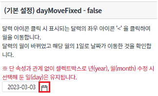
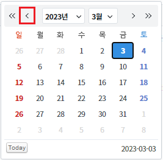
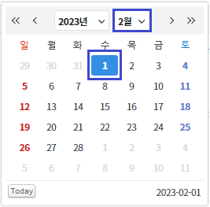
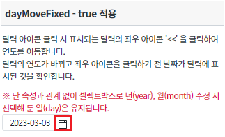
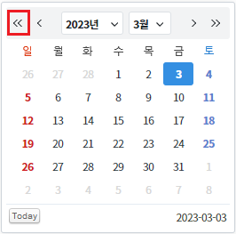
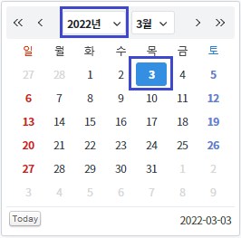
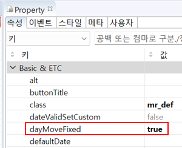
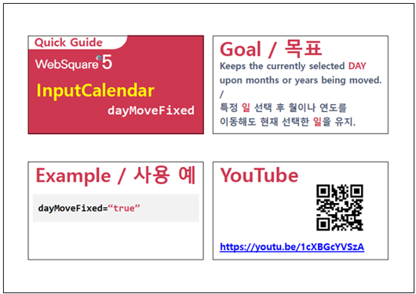

달력 아이콘 클릭, 특정 일(Day)을 선택한 후, 달력 상단의 화살표를 사용하여 월이나 연도를 이동해도 현재 선택한 일을 유지할 수 있습니다. 이 기능은 아래의 속성으로 사용할 수 있습니다. - dayMoveFixed : 날짜(day) 유지 유무
속성과 관계없이 셀렉트박스로 년(year),월(month) 수정 시 선택해 둔 일(day)은 유지됩니다.
속성 'dayMoveFixed' 미사용
속성 'dayMoveFixed' 사용
달력 모양의 아이콘을 클릭합니다.
[브라우저(Chrome) 실행 예시]

달력의 좌우 아이콘 '<' 을 클릭하여 월을 이동합니다.
[브라우저(Chrome) 실행 예시]

월이 바뀌었고 해당 월의 1일로 날짜가 이동한 것을 확인합니다.
[브라우저(Chrome) 실행 예시]

달력 모양의 아이콘을 클릭합니다.
[브라우저(Chrome) 실행 예시]

달력의 좌우 아이콘 '<<' 을 클릭하여 연도를 이동합니다.
[브라우저(Chrome) 실행 예시]

연도가 바뀌었고 좌우 아이콘을 클릭하기 전 날짜가 달력에 표시되어있는 것을 확인합니다.
[브라우저(Chrome) 실행 예시]

InputCalendar의 속성을 정의합니다.
[필수] dayMoveFixed="true" //[default:false, true] dayMoveFixed="true" 속성 설정을 적용하면, 특정 일(Day)을 선택한 후, 달력 상단의 화살표를 사용하여 월이나 연도를 이동해도 현재 선택한 일을 유지할 수 있습니다.
그림 1.웹스퀘어5 SP5 스튜디오의 Property View(속성창) 예시

<!-- inputCalendar 의 소스 본문 예시 --> <w2:inputCalendar dayMoveFixed="true" id="ica_exam_2"> </w2:inputCalendar>
[웹스퀘어5 SP5 개발 가이드] InputCalendar
링크 : https://docs1.inswave.com/sp5_user_guide#82bd8b117b294ca9
[웹스퀘어5 SP5 개발 가이드] InputCalendar - 일 선택 유지
링크 : https://docs1.inswave.com/sp5_user_guide#15551dbf72c8d86a
InputCalendar - 특정 일 선택 후 월이나 연도를 이동해도 현재 선택한 일을 유지
링크 : https://youtu.be/1cXBGcYVSzA
